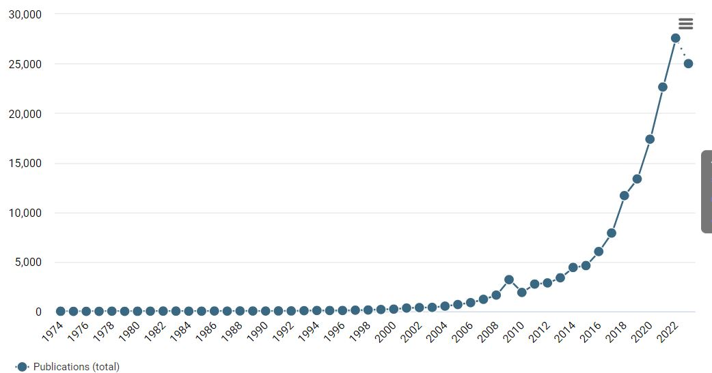

| X1 | X2 | X3 |
|---|---|---|
| 1.10 | A | Yes |
| 2.12 | C | No |
| 13.50 | B | No |
| 8.70 | B | No |
| X1a | X2a | X3a |
|---|---|---|
| 1 | A | NA |
| 2 | B/C | NA |
| 10+ | B/C | NA |
| 9 | B/C | NA |
Lecture 2 - The history of synthetic data
Generating synthetic data
Classical disclosure control approaches
History of synthetic data
Advantages and disadvantages of synthetic data
Analyses with synthetic data
Scientific articles on “data privacy”
Data collection is something of all times
In the past thousands of years mainly by statistical institutes / governmental organizations
Only confidentiality breaches: data sharing with other governments
Little privacy risk: only aggregate statistics
Even aggregate statistics can be revealing
Early statistical disclosure limitation methods focused on protecting aggregate statistics (means, counts)
Ways to deal with disclosure risks in tabular data: global recoding, cell suppression, perturbative methods.
Many different ways to implement these methods, see Hundepool et al. (2012), Chapters 4-5.
Increase in (micro-)data collection, storage and analysis
How to share collected information without sacrificing privacy?
Microdata protection:
See Hundepool et al. (2012), Chapter 3.
| X1 | X2 | X3 |
|---|---|---|
| 1.10 | A | Yes |
| 2.12 | C | No |
| 13.50 | B | No |
| 8.70 | B | No |
| X1a | X2a | X3a |
|---|---|---|
| 1 | A | NA |
| 2 | B/C | NA |
| 10+ | B/C | NA |
| 9 | B/C | NA |
No information is suppressed, but records are altered to protect privacy
Another solution to data privacy is remote access
Often cumbersome in practice: researchers need individual agreements
Unforeseen problems with the data are hard to solve
Traditional approaches are hard to implement in a good way
Need custom made analysis techniques, or reduce the analytic quality of the data tremendously
Synthetic data can be a straightforward solution
Synthetic data is closely related to multiple imputation for missing data
Rather than replacing missing values, sensitive / identifying values are imputed
With multiple draws from a model fitted to the observed data
Multiple draws enable valid inferences (i.e., correct standard errors; more about this tomorrow)
Fully synthetic data
Partially synthetic data
See Drechsler (2011) for a thorough review.
Idea due to Rubin (1993), inspired by multiple imputation for missing data
Approach:
Treat entire population except observed sample as missing data
Impute the missing data with multiple imputation (synthetic populations)
Sample from the synthetic population
| X | Y1 | Y2 | Y3 |
|---|---|---|---|
| X1 | |||
| X2 | |||
| X3 | |||
| X4 | |||
| X5 | Synthetic | Synthetic | Synthetic |
| X6 | Synthetic | Synthetic | Synthetic |
| X7 | |||
| X8 | |||
| X9 | Observed | Observed | Observed |
| X10 | Observed | Observed | Observed |
Advantages
Disadvantages
Idea due to Little (1993), who noted that not all information in a dataset is disclosive and/or sensitive
Not necessary to synthesize all variables and all records
Replace only those variables that are sensitive, or that bear a high risk of leading to reidentification
Or even replace only those values that we think are disclosive (e.g., values in the tails)
The more we leave unaltered, the higher the analytic validity
Advantages
Disadvantages
Evaluation of remaining disclosure risks is very important!
Multivariate relationships are preserved
Variable types are preserved
Better able to deal with practical problems like:
Transparent procedure: the entire modelling procedure can be shared with the public, which helps researchers to decide what the data can and cannot be used for
Data quality very much depends on the imputation model
Ill-fitting models: poor data quality
Only aspects that are modelled explicitly are preserved
Modelling procedure is quite involved
Similar to analyzing multiple imputed datasets
Do normal statistical analysis on each synthetic dataset
Pool the results into a final estimate
But: pooling rules differ per synthesizing strategy
The quantities we need
\(m\) synthetic datasets.
\(Q\) denotes the true regression weights \(\beta_0\) and \(\beta_1\)
Then, \(q_j\) denotes the estimated regression weights in synthetic dataset \(j\)
And \(u_j\) denotes the squared standard errors
\[\begin{aligned} \bar{q}_m &= \sum^m_{j=1} q_j/m ~~~~~~ (\text{e.g.,} ~~ (\hat{\beta}_{0,1} + \dots + \hat{\beta}_{0,m})/m) \\ \\ \bar{u}_m &= \sum^m_{j=1} u_j/m ~~~~~~ (\text{e.g.,} ~~ (Var[\hat{\beta}_{0,1}] + \dots + Var[\hat{\beta}_{0,m}])/m)\\ \\ b_m &= \sum^m_{j=1} (q_j - \bar{q}_m)^2 / (m-1) \end{aligned}\]
The quantity of interest \(Q\) is estimated as \[\bar{q}_m = \sum^m_{j=1} q_j/m,\] with total variance (Raghunathan, Reiter, and Rubin 2003) \[T_f = b_m + b_m/m - \bar{u}_m,\] such that the standard error of the estimate is given by \(\sqrt{T_f}\).
For large enough sample sizes, inferences can be based on a \(t\)-distribution \[(\bar{q}_m - Q) \sim t_{\nu_f}(0, T_f),\] with degrees of freedom \[ \nu_f = (m-1)\bigg(1 - \frac{\bar{u}_m}{(b_m + b_m/m)}\bigg)^2. \]
Note that the total variance \(T_f\) can become negative.
\[T_f = b_m + b_m/m - \bar{u}_m,\]
This can typically be remedied by increasing \(m\), but a modified estimator can be obtained as
\[T_{f}^{(0)} = \frac{n_{syn}}{n} \bar{u}_m\] if \(T_f \leq 0\).
The quantity of interest \(Q\) is estimated as \[\bar{q}_m = \sum^m_{j=1} q_j/m,\] with total variance (Reiter 2003) \[T_p = \bar{u}_m + b_m/m,\] such that the standard error of the estimate is given by \(\sqrt{T_p}\).
For large enough sample sizes, inferences can be based on a \(t\)-distribution \[(\bar{q}_m - Q) \sim t_{\nu_p}(0, T_p),\] with degrees of freedom \[ \nu_p = (m-1)\bigg(1 + \frac{\bar{u}_m}{(b_m/m)}\bigg)^2. \]
If the synthetic data is completely synthesized,
Or if the unsynthesized variables are in the synthesis model and in the analysis model,
A more efficient variance estimator is available (Raab, Nowok, and Dibben 2018):
\[T_s = \bar{u}_m + \bar{u}_m/m,\] which requires only a single synthetic dataset.